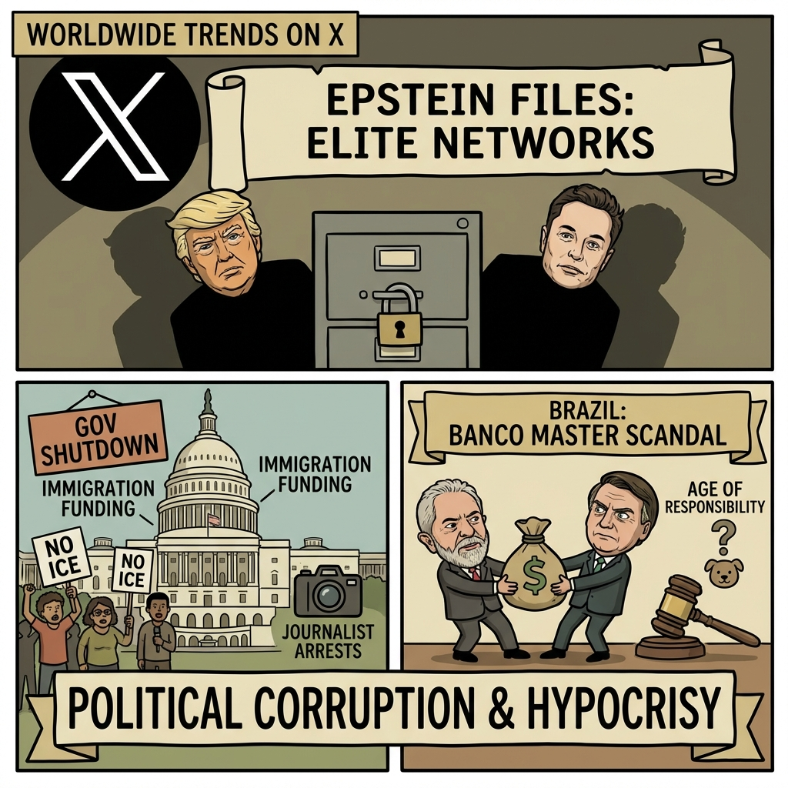

The Daily Globe: Epstein Files and Elite Child Trafficking Scandal, Justice Dept Releases 3.5M Epstein Documents, and Escândalo do Banco Master Involving Lula/PT
Published on 2026-02-01

World
- Epstein Files and Elite Child Trafficking Scandal
Renewed outrage over unsealed Epstein documents implicating figures like Trump, Musk, Prince Andrew in child exploitation allegations.
- Political Corruption and Hypocrisy
Accusations of double standards in Western media coverage of US/UK scandals vs. China military purges and Nigerian politician perks.
- Global Human Rights Atrocities
Discussions on child trafficking rings, UN inaction, UK grooming gangs, and exploitation in South Asia.
USA
- Justice Dept Releases 3.5M Epstein Documents
Files mention Trump hundreds of times, connections to Musk, Gates; reignites elite corruption debates.
- Partial Government Shutdown Over Immigration Funding
Funding lapse due to DHS/ICE budget disputes and SNAP work requirements.
- Anti-ICE Protests and Journalist Arrests
Nationwide protests escalate; Don Lemon charged for covering church protest, sparking First Amendment concerns.
Brazil
- Escândalo do Banco Master Involving Lula/PT
CNN exposes alleged financial scandal links to Lula and PT.
- Bolsonaro as Top Political Leader
Blogueiro admits Bolsonaro remains dominant force despite restrictions.
- Debate on Reducing Age of Criminal Responsibility
Case of animal cruelty by minors reignites calls for change.
Topic Index
- epstein-scandal
- child-trafficking
- elite-corruption
- political-hypocrisy
- media-bias
- human-rights-atrocities
- government-shutdown
- immigration-protests